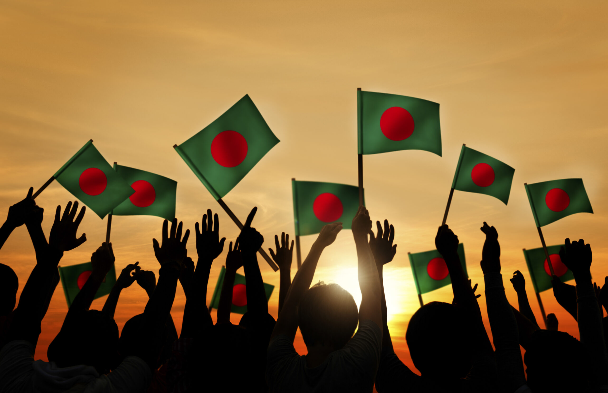

Independence:
Bangladesh attained its independence in 1971 after a nine-month war with Pakistan. With India’s support, the country freed itself on March 26th from Pakistan under the guidance of Sheikh Mujibur Rahman
Religion:
Nearly 90% of the population follows Islam, making it the dominant religion. Hinduism constitutes around 9%, and the remaining 1% includes Christianity and Buddhism
Bordering Countries:
Bangladesh shares land borders with Myanmar and India. While China, Bhutan, and Nepal do not have direct land borders with Bangladesh, they are in close proximity
Population Density:
Bangladesh is one of the most densely populated countries globally, with 1,240 people per square kilometer of land area.
